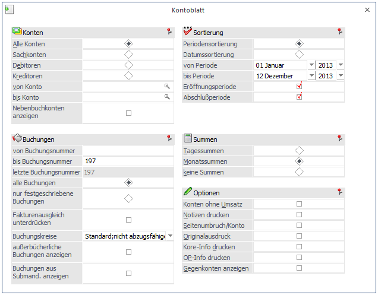
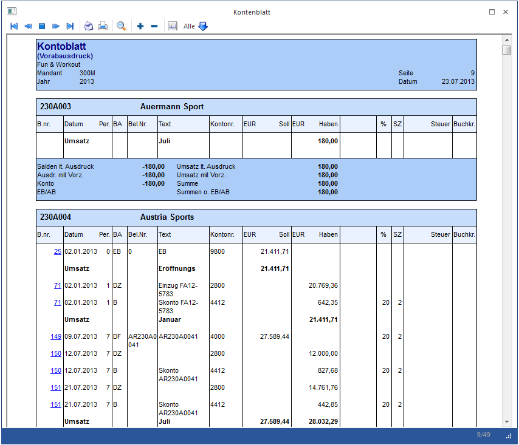
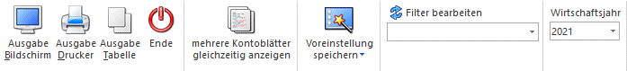
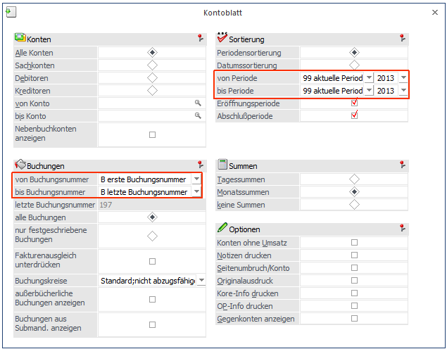
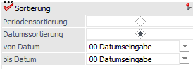

Im Menüpunkt…
1 WinLine FIBU
1 Auswertungen
1 Kontoblatt
… können beliebige Kontoblätter zu jedem beliebigen Zeitpunkt (ohne etwaige Abschlussläufe, etc.) ausgewertet werden.

Folgende Kriterien können eingeschränkt werden:
Konten
Ø Konten
Eingrenzung des Druckbereichs auf Alle Konten / Sachkonten / Debitoren / Kreditoren
Ø von Konto / bis Konto
Eingabe des Kontenbereiches, zwischen denen alle Kontoblätter gedruckt werden sollen (Suche mit F9).
Ø Nebenbuchkonten anzeigen
Ist diese Checkbox nicht gesetzt (Standardeinstellung beim Öffnen des Fensters) werden keine Nebenbuchkonten ausgewertet, d.h. nur Hauptbuchkonten und Konten, die weder Hauptbuchkonten sind, noch einem Hauptbuchkonto zugewiesen sind werden ausgewertet. Ist die Checkbox dagegen aktiviert, werden Hauptbuchkonten nicht ausgewertet, sondern nur Nebenbuchkonten und Konten, die nicht einem Hauptbuchkonto zugewiesen sind. Im aktivierten Zustand werden auch Buchungen beim Hauptbuchkonto angezeigt, die direkt auf das Hauptbuchkonto gebucht wurden.
Die Einstellung wird benutzerspezifisch gespeichert und beim nächsten Aufruf des Kontoblattes voreingestellt.
Hinweis
Die Checkbox ist nicht wählbar (grau angezeigt), wenn keine Hauptbuchkonten im Mandant definiert sind.
Buchungen
Ø Buchungen
Eingrenzung der Ausgabe über Eingabe der Prima Nota Nummer.
Ø Alle Buchungen
Alle Buchungen werden (gemäß den sonstigen getroffenen Eingrenzungen) ausgegeben, d.h. wenn in den FIBU-Parametern (WinLine START/Optionen) eingestellt wurde, dass Buchungen - bis zum Zeitpunkt, an dem sie festgeschrieben werden - noch als Stapel geladen und editiert werden können, dann stehen bei dieser Option ALLE Buchungen (die bereits festgeschriebenen UND die noch vorläufigen Buchungen) für die Ausgabe zur Verfügung.
Ø Nur festgeschriebene Buchungen
Bei dieser Einstellung werden nur DIE Buchungen ausgegeben, die bereits im Menüpunkt
1 Buchen
1 Buchen
1 Buchungen festschreiben
als "definitiv" gekennzeichnet worden sind.
Ø Fakturenausgleich unterdrücken
Im Zuge des manuellen und automatischen Fakturenausgleichs (Ausziffern von Gutschriften und Fakturen - sowohl im Personenkonten- als auch im Sachkonten-OP-Bereich) werden sogenannte "Fakturenausgleichsbuchungen" zu dokumentationszwecken erstellt (siehe Kapitel "Fakturenausgleich"). Da diese Buchungszeilen ausschließlich informativen Charakter haben, können diese Zeilen durch Aktivieren dieser Option für die Ausgabe unterdrückt werden.
Ø Buchungskreise
Im Kontoblatt kann auf Buchungskreise eingeschränkt werden. In der Auswahllistbox werden nur jene Buchungskreise angezeigt, für die der Benutzer die Berechtigung hat.
Auf dem Kontoblatt wird in der letzten Spalte "Buchkr." die 3-stellige Kurzbezeichnung des Buchungskreises angedruckt.
Die Auswahllistbox ist nur aktiv, wenn die entsprechende Lizenz vorhanden ist.
Ø außerbücherliche Buchungen anzeigen
Nach Aktivieren der Checkbox werden im Kontoblatt auch die außerbücherlichen Buchungen (Buchungen mit einer Steuerzeile "Pagatorische Aufwände/Erlöse" aktiv) mit ausgegeben. Die außerbücherlichen Buchungszeilen werden andersfarbig (gelb) dargestellt und in der letzten Spalte "Buchkr. mit einem # markiert.
Beim Andruck der außerbücherlichen Buchungen wird im Summenteil der Saldo für diese Buchungen separat angedruckt.
Ø Buchungen aus Submand. anzeigen
Bei der Auswertung des Kontoblattes kann aus dem Hauptmandanten die Checkbox für den Submandanten aktiviert werden, dann werden auf dem Kontoblatt die Buchungen des Hauptmandanten und der Submandanten ausgegeben. Bei mandantenübergreifender Auswertung wird nicht der detaillierte Summenfuß sondern "Salden lt. Ausdruck" und "Umsatz lt. Ausdruck" angedruckt. Wird die Auswertung im Konsolidierungshauptmandanten mit den Buchungen aus den Submandanten ausgegeben, so werden pro Submandantenkonto eine Zwischenüberschrift und auch die Summe ausgegeben.
Damit man eine mandantenübergreifende Auswertung erhält, müssen die Konten konsolidiert und bebucht worden sein. Wenn diese Checkbox aktiviert ist, erhält man keine Kore-, OP-Info oder Gegenkonten.
Hinweis
Die Checkbox "Nebenbuchkonten anzeigen" wird bei der Mandantenkonsolidierung nicht berücksichtigt, in diesem Fall werden immer die Nebenbuchkonten des Submandanten ausgewertet.
Sortierung
Je nachdem, welche Einstellung hier vorgenommen wurde, können die nachfolgenden Felder bearbeitet werden:
Ø Periodensortierung:
Ist diese Option eingestellt, kann aus den Auswahllistboxen Periode von und Periode bis ausgewählt werden, welche Perioden beim Ausdruck berücksichtigt werden sollen.
Ø Datumssortierung
Ist diese Option eingestellt, kann in den Feldern von Datum bis Datum eingegeben werden, welcher Datumsbereich ausgewertet werden soll.
Ø Periode und Wirtschaftsjahr
Eingabe der von / bis Periode und des Wirtschaftsjahres für den Ausdruck. Durch die Eingabe des Wirtschaftsjahres ist der Ausdruck eines jahresübergreifenden Kontoblatts möglich.
Ø Eröffnungsperiode
aktiv: In der Auswertung der Perioden werden auch die Werte der Eröffnungsperiode berücksichtigt.
inaktiv: In der Auswertung der Perioden werden die Werte der Eröffnungsperiode in einer Vorzeile dargestellt.
Ø Abschlussperiode
aktiv: In der Auswertung der Perioden werden auch die Werte der Abschlussperiode berücksichtigt.
inaktiv: In der Auswertung der Perioden werden die Werte der Abschlussperiode nicht berücksichtigt.
Die Checkboxen für den Andruck der Eröffnungs- und Abschlussperiode werden standardmäßig bereits aktiviert vorgeschlagen und können bei Bedarf deaktiviert werden.
Summen
Ø Summen
Tagessumme / Monatssumme / keine Summen. Wurde die Option "Datumssortierung" ausgewählt, kann die Option Monatssumme nicht aktiviert werden.
Optionen
Ø Konten ohne Umsatz
Aktiv: auch Konten, die bisher keine Bewegungen haben, sollen gedruckt werden
Inaktiv: nur Konten mit Bewegungen sollen gedruckt werden
Ø Notizen drucken
Bei Aktivierung der Checkbox werden nicht nur die Kurztexte der Buchungserfassung gedruckt, sondern auch die über die Notizblock-Funktion in der Journalzeile hinterlegten Texte.
Ø Seitenumbruch nach jedem Konto
Bei Aktivierung der Checkbox wird nach jedem Konto ein Seitenumbruch durchgeführt. Andernfalls würden die Konten in journalisierter Form hintereinander gedruckt werden, wobei nur am Seitenende automatisch ein Umbruch erfolgen würde.
Ø Originalausdruck
Wird diese Checkbox aktiviert, kann der Druck der Kontoblätter nur auf den Drucker erfolgen. Die Option "Seitenumbruch nach jedem Konto" wird ebenfalls aktiviert und kann nicht verändert werden.
Für den Originalausdruck kann nach wie vor die Selektion nach Konten durchgeführt werden, die Einschränkung nach Datum oder nach Buchungsnummern ist nicht möglich - da nicht sinnvoll.
Mit dem Druck des Originalausdruckes werden die letzte Buchungsnummer und die letzte Seitennummer pro Konto gespeichert. Bei einem weiteren Originalausdruck wird die Seitennummer dann automatisch hochgezählt.
Beim Druck des Originalausdruckes wird geprüft, ob das Konto seit dem letzten Originalausdruck bebucht wurde. Ist dies nicht der Fall, wird kein neuerliches Kontoblatt gedruckt.
Beim Originalausdruck werden nur die neuen Buchungen angedruckt. Für die Vortragswerte wird eine eigene Zeile angedruckt, in der die Summe der Vorzeilen angezeigt wird.
Die Summe der Vorzeilen wird auch dann gedruckt, wenn bei einem Kontoblatt nur ein bestimmter Bereich (Datumseinschränkung oder Einschränkung auf Buchungsnummern) gedruckt wird.
Im Originaldruck werden automatisch nur alle bereits festgeschriebenen Buchungszeilen in die Ausgabe eingebracht (d.h. alle Zeilen, die noch nicht den Status "definitiv" aufweisen, müssen erst "festgeschrieben" werden, um im Originaldruck angedruckt werden zu können.
Ø Kore-Info drucken
Mit dieser Option können zur FIBU-Zeile auch die entsprechenden KORE-Zeilen mitgedruckt werden
Ø OP-Info drucken
Mit dieser Option können Sie auch die dazugehörige Offene Posten-Information anzeigen.
Ø Gegenkonten anzeigen
Es werden die Gegenkonten (kann ein- oder mehrere Konten betreffen) angezeigt. Diese Checkbox wird benutzerabhängig gespeichert (d.h. wenn der Benutzer das Fenster neu aufruft, wird ihm auch diese Checkbox aktiviert vorgeschlagen).
Hinweis 1
Alle Optionen können auch über eine Tastenkombination (ALT + unterstrichener Buchstabe) aktiviert / deaktiviert werden. So wird z.B. die Checkbox "Kore-Info drucken" über ALT + d aktiviert/deaktiviert.
Ø Filter
Durch Anwahl des FILTER-Buttons kann eine detailliertere Einschränkung der Konten vorgenommen werden, für die ein Kontoblatt ausgedruckt werden soll.
Hinweis 2
Im Filter wird berücksichtigt, ob die Checkbox "Nebenbuchkonten anzeigen" gesetzt ist oder nicht, d.h. bei der Einschränkung eines Wertes aus den FIBU-Salden wird abhängig von der Checkbox der entsprechende Haupt- oder Nebenbuchkonten-Satz geprüft.

Im Kontoblatt existiert standardmäßig ein DrillDown auf die Buchungsnummer. Dabei wird die Buchungs-Info geöffnet, um sich detailliertere Informationen zu der Buchung anzeigen zu lassen. Die Buchungs-Info wird auch bei jahresübergreifenden Buchungen oder Buchungen aus Submandanten angezeigt.
Im Kontoblatt gibt es auch die Möglichkeit, ein DrillDown von z.B. der Kontonummer in das Archiv einzubauen. Dazu muss die gewünschte Variable (z.B. Gegenkonto) im Formular-Editor mit der Option "Drill Down" versehen werden. Als "Drill Down Text" wird dann der Text "@MESOARCHIV[1]" hinterlegt, wobei 1 für das Schlagwort im Archiv steht. Dadurch wird die Variable blau und unterstrichen dargestellt. Wird dieser Eintrag angeklickt, wird die Archiv-Vorschau mit allen gefundenen Dokumenten angezeigt.
Wird ein Kontoblatt für ein Hauptbuchkonto ausgegeben, werden die Buchungszeilen für die zugewiesenen Nebenbuchkonten angedruckt (über DrillDown auf die Buchungsnummer kann die Buchungs-Info für die Buchung mit dem Nebenbuchkonto geöffnet werden). Die Information, ob ein Konto eine Steuerziele getragen hat oder nicht, wird dabei vom Nebenbuchkonto verwendet, dementsprechend auch werden abhängig davon die Steuerbeträge und -summe angedruckt oder nicht.
Hinweis 4
Es ist möglich, dass eine Buchung dasselbe Hauptbuchkonto im Soll und Haben eingetragen hat. Beispiel: eine B-Buchung für 2 Nebenbuchkonten im Soll und Haben, die beide dasselbe Hauptbuchkonto hinterlegt haben). In diesem Fall wird die Buchung zweimal (1mal im Soll, 1mal im Haben) beim Kontoblatt-Auswertung des Hauptbuchkontos angedruckt und auch in den Summen entsprechend berücksichtigt.
Buttons

Ø Ausgabe Bildschirm / Ausgabe Drucker
Es kann gewählt werden, ob die Ausgabe am Bildschirm oder am Drucker durchgeführt werden soll. Standardmäßig wird die Ausgabe auf Bildschirm vorgeschlagen, die auch durch Drücken der F5-Taste gestartet werden kann.
Ø Ausgabe Tabelle
Über den Button "Ausgabe Tabelle" wird die Tabellenanzeige geöffnet. Weitere Details entnehmen Sie bitte dem Kapitel Buchungen.
Ø Ende
Das Fenster wird geschlossen.
Ø Mehrere Kontoblätter gleichzeitig anzeigen
Durch Aktivierung des Buttons ist es möglich, die Bildschirm-Ausgabe oder die Tabellenausgabe des Kontoblattes jeweils bis zu 10x gleichzeitig zu öffnen. Die Einstellung des Buttons wird benutzerabhängig gespeichert und beim nächsten Öffnen des Fensters wiederhergestellt.
Ø Voreinstellung speichern
Durch Anwahl dieses Buttons erfolgt eine benutzerspezifische Speicherung aller im Fenster getätigten Einstellungen. Diese sogenannten "Voreinstellungen" können jederzeit wieder abgerufen werden und ermöglichen dadurch ein schnelleres und zielorientierteres Arbeiten (nähere Informationen entnehmen Sie bitte dem Kapitel "Die Voreinstellungen").
Ø Filter bearbeiten
Zusätzlich dazu kann die Ausgabe von Buchungszeilen auch noch über die "Filter-Funktion" eingeschränkt werden. Um diese Einschränkung vorzunehmen, muss der FILTER-Button angewählt werden.
Nähere Informationen bezüglich des Filters finden Sie im Handbuch WinLine Allgemein.
Ø Wirtschaftsjahr
Hier kann auf das gewünschte Wirtschaftsjahr eingestellt werden. Standardmäßig wird das aktuelle WJ angezeigt, bzw. jenes, in dem man sich derzeit befindet.
Besonderheiten beim Aufruf dieses Fenster aus dem Menüpunkt "Reportdefinition"

Ø Periode
In der Auswahllistbox der Perioden gibt es den Eintrag "aktuelle Periode".
Wird dieser Eintrag gewählt, so wird bei der Vorschau des Reports bzw. beim Erzeugen des Reports die Periode mit jener Periode des aktuellen Datums belegt.
Ø Datumssortierung/Datum

Die Datumsfelder sind standardmäßig Auswahllistboxen mit folgenden Eingabemöglichkeiten:
ü 0 Datumseingabe: Bei Bestätigung dieses Eintrages wird die Auswahllistbox wieder zu einem Datumsfeld. Falls man wieder zurück auf die Comboansicht wechseln möchte, muss im Feld der Eintrag "D" erfolgen.
ü 1 Heute
ü 2 Gestern
ü 3 Anfang des Monats
ü 4 Ende des Monats
ü 5 Anfang des letzten Monats
ü 6 Ende des letzten Monats
ü 7 Anfang der Woche
ü 8 Ende der Woche
ü 9 Anfang der letzten Woche
ü 10 Ende der letzten Woche
Falls einer dieser Einträge gewählt wurde wird bei der Vorschau des Reports bzw. beim Erzeugen des Reports das Datum entsprechend belegt.
Ø Buchungen von-bis
Die Buchungsnummernfelder sind standardmäßig ebenfalls Auswahllistboxen mit folgenden Eingabemöglichkeiten:
ü A Nummerneingabe: Bei der Bestätigung dieses Eintrages wird die Auswahllistbox wieder zu einem Nummernfeld. Falls man wieder zurück auf die Auswahllistbox wechseln möchte, muss im Feld der Eintrag "N" verwendet werden.
ü B Erste/Letzte Buchungsnummer: Falls dieser Eintrag gewählt wurde wird bei der Vorschau des Reports bzw. beim Erzeugendes Reports die Buchungsnummer entsprechend belegt.
Ø Ausdruck
Auf der letzten Seite der Ausgabe wird das Datum der Erstellung angedruckt.